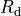

Other Sersic related functions¶
-
galaxy.morphology.centralIntensity(n, re, Ie=None, mag=None, offset=None)[source]¶ Code author: Wilfried Mercier - IRAP <wilfried.mercier@irap.omp.eu>
Compute the central intensity of a given Sersic profile.
- Parameters
n (int or float) – Sersic index of the profile
re (float) – half-light radius
Ie (float) – (Optional) intensity at Re. If None, values for mag and offset must be given instead.
mag (float) – (Optional) total magnitude. If None, Ie must be given instead.
offset (float) – (Optional) magnitude offset. If None, Ie must be given instead
- Returns
central intensity of the Sersic profile
- Return type
float
- Raises
ValueError – if Ie and mag and offset are None
-
galaxy.morphology.compute_R22(Red, dRed=None, b1=None)[source]¶ Code author: Wilfried Mercier - IRAP <wilfried.mercier@irap.omp.eu>
Compute R22 (and its error) given an array of disk effective radii defined as

where  is the disk effective radius.
- Parameters
Red (float or ndarray[float]) – disk effective radii
b1 (float) – (Optional) b1 factor appearing in the exponential disk profile
dRed (float or ndarray[foat]) – (Optional) error estimate on the effective radii
- Returns
R22 (and its error)
- Return type
float or ndarray[float]